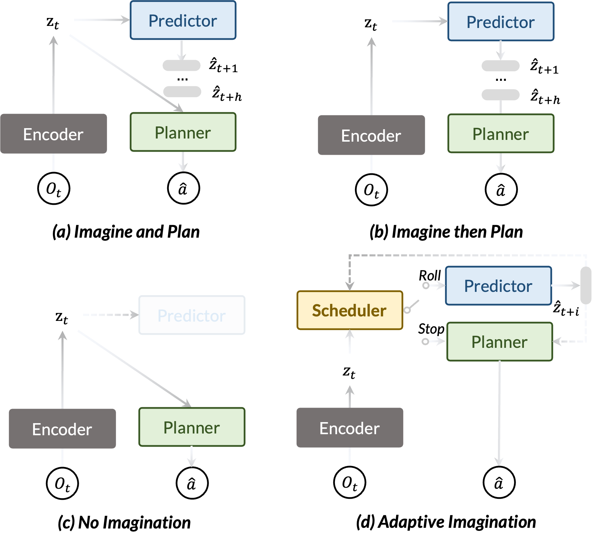
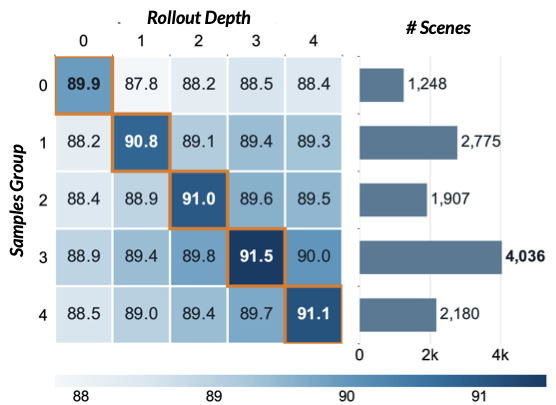
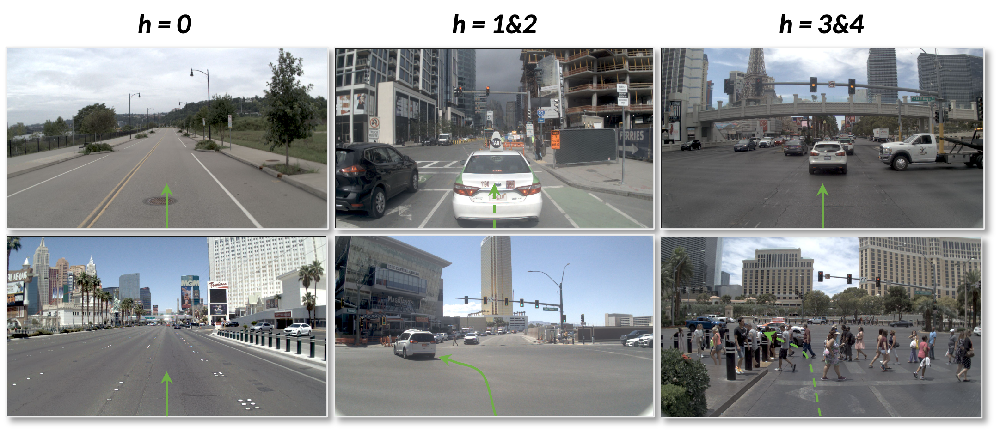
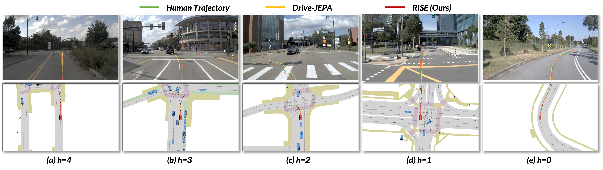

Future Planning Gain
Measures how much the planning score could improve by continuing from the current latent prefix.

World Action Models improve planning by incorporating future world evolution into action generation, yet existing methods allocate a fixed imagination budget to every scene. RISE (Refining Imagination through SElective Rollout) makes sequential Roll/Stop decisions according to the expected planning benefit of continued rollout.
At each step, a Latent Evaluator estimates the risk revealed by the current prefix and how much planning could improve if imagination continues. A Rollout Gate weighs this expected benefit against additional computation cost. To overcome the single-future limitation of factual driving logs, CounterDrive supplies diverse counterfactual outcomes, risk levels, verified incident onsets, and causal annotations.
Experiments on NAVSIM and nuScenes show that RISE achieves the best overall planning performance while reducing unnecessary rollout. Transfer experiments further support its use as a plug-in scheduler across WAM architectures.
Measures how much the planning score could improve by continuing from the current latent prefix.
Predicts a Risk Profile for revealed hazards and a gain profile for the remaining rollout choices.
Balances predicted planning gain against computation cost and makes a fresh Roll/Stop decision at every step.

CounterDrive augments selected factual scenes with counterfactual 10-second driving videos. Human annotators verify ego-motion consistency, identify incident onset, mark generation distortions, and categorize causal behavior. Accepted clips supervise future prediction, while verified factual-counterfactual pairs provide temporally localized risk supervision.
Best overall planning performance, improving the strongest baseline by 0.8 points.
Ranks first or ties for first on seven of nine component metrics.
State-of-the-art trajectory accuracy with a 0.10 average collision rate.
Adaptive scheduling reaches 90.8 EPDMS at 287.429 ms latency.
| Method | L2 (m) ↓ | Collision Rate ↓ | ||||||
|---|---|---|---|---|---|---|---|---|
| 1s | 2s | 3s | Avg. | 1s | 2s | 3s | Avg. | |
| BEV-Planner | 0.30 | 0.52 | 0.83 | 0.55 | 0.10 | 0.37 | 1.30 | 0.59 |
| LAW | 0.26 | 0.57 | 1.01 | 0.61 | 0.14 | 0.21 | 0.54 | 0.30 |
| World4Drive | 0.23 | 0.47 | 0.81 | 0.50 | 0.02 | 0.12 | 0.33 | 0.16 |
| WorldRFT | 0.21 | 0.44 | 0.76 | 0.47 | 0.10 | 0.11 | 0.23 | 0.15 |
| DAWN | 0.17 | 0.31 | 0.52 | 0.33 | 0.00 | 0.10 | 0.23 | 0.11 |
| RISE | 0.16 | 0.29 | 0.49 | 0.31 | 0.00 | 0.11 | 0.20 | 0.10 |
| Method | NC ↑ | DAC ↑ | EP ↑ | C ↑ | TTC ↑ | PDMS ↑ |
|---|---|---|---|---|---|---|
| DrivingGPT | 98.9 | 90.7 | 79.7 | 95.6 | 94.9 | 82.4 |
| LAW | 97.4 | 93.3 | 78.8 | 100 | 91.9 | 83.8 |
| World4Drive | 97.4 | 94.3 | 79.9 | 100 | 92.8 | 85.1 |
| Epona | 97.9 | 95.1 | 80.4 | 99.9 | 93.8 | 86.2 |
| DriveVLA-W0 | 98.4 | 95.3 | 80.9 | 100 | 95.2 | 87.2 |
| PWM | 98.6 | 95.9 | 81.8 | 100 | 95.4 | 88.1 |
| DreamerAD | 98.0 | 97.2 | 83.1 | 100 | 94.3 | 88.7 |
| DriveLaW | 99.0 | 97.1 | 81.3 | 100 | 96.7 | 89.1 |
| Drive-JEPA | 98.7 | 96.2 | 82.9 | 100 | 95.5 | 89.0 |
| DAWN | 98.7 | 95.9 | 84.3 | 100 | 96.0 | 89.1 |
| EponaV2 | 98.6 | 97.9 | 84.8 | 100 | 95.7 | 90.4 |
| DriveFuture | 98.8 | 99.1 | 95.4 | 100 | 84.2 | 90.7 |
| RISE | 99.1 | 97.7 | 98.3 | 100 | 98.6 | 91.5 |
| Method | NC ↑ | DAC ↑ | DDC ↑ | TL ↑ | EP ↑ | TTC ↑ | LK ↑ | HC ↑ | EC ↑ | EPDMS ↑ |
|---|---|---|---|---|---|---|---|---|---|---|
| DAWN | 97.3 | 92.0 | 99.1 | 99.7 | 87.4 | 96.6 | 96.0 | 98.3 | 85.5 | 83.2 |
| DreamerAD | 98.0 | 97.2 | 99.5 | 99.8 | 87.8 | 97.4 | 97.5 | 98.3 | 72.4 | 85.1 |
| DriveLaW | 98.7 | 96.9 | 99.6 | 99.8 | 87.5 | 98.3 | 97.6 | 98.4 | 77.4 | 88.6 |
| EponaV2 | 98.5 | 97.4 | 99.5 | 99.9 | 87.9 | 98.1 | 97.7 | 98.2 | 77.4 | 88.9 |
| Latent-WAM | 98.1 | 97.3 | 99.6 | 99.8 | 87.7 | 97.3 | 97.6 | 98.1 | 87.3 | 89.3 |
| DriveFuture | 98.8 | 99.1 | 99.6 | 99.9 | 86.6 | 98.4 | 96.4 | 98.3 | 74.8 | 89.9 |
| RISE | 99.1 | 97.7 | 99.7 | 99.9 | 87.8 | 98.7 | 98.0 | 98.4 | 87.4 | 90.8 |


| Scheduler | CounterDrive | EPDMS ↑ | PDMS ↑ |
|---|---|---|---|
| - | - | 88.9 | 89.7 |
| - | ✓ | 89.8 | 90.5 |
| ✓ | - | 90.4 | 91.2 |
| ✓ | ✓ | 90.8 | 91.5 |
| Method | Avg. Rollout | Latency (ms) | EPDMS ↑ |
|---|---|---|---|
| Random Stop | 2.03 | 264.075 | 89.5 |
| Latent Margin | 2.98 | 308.532 | 89.7 |
| Scheduler | 2.40 | 287.429 | 90.8 |

@misc{lu2026rise,
title={RISE: Adaptive Imagination for World Action Models},
author={Hongbo Lu and Liang Yao and Chenghao He and Hao Han and Fan Liu and Wenlong Liao and Tao He and Pai Peng},
year={2026},
url={https://cowarobot-ai.github.io/RISE/}
}